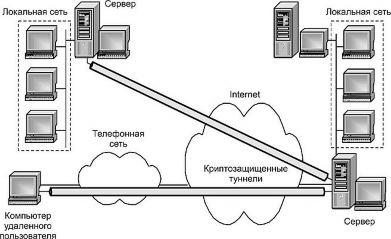
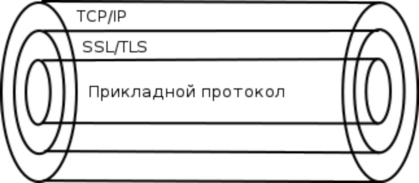
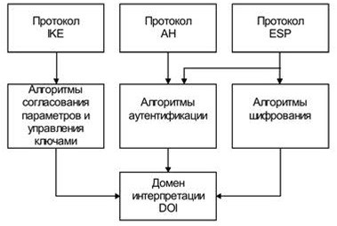

УДК 004.056
Бондаренко В.В., Чернышова А.В.
ГОУ ВПО «Донецкий национальный технический университет» (г. Донецк)
e-mail: vadimbond.2000@gmail.com, chernyshova.alla@rambler.ru
Защита информации при передаче данных в компьютерных сетях одна из важнейших задач в современном мире. Внутри локальной сети данные могут быть надежно защищены, но при передаче данных за пределы локальной сети, при использовании сети Internet, вероятность утечек повышается.
Очень часто использование недостаточно эффективных средств защиты становится причиной утраты персональных данных граждан, номеров их банковских карт, сведений, имеющих характер коммерческой тайны. [1].
Поэтому исследование существующих протоколов безопасной передачи данных, которые используют криптографические алгоритмы, весьма актуально. На сегодняшний день существуют протоколы защиты информации, работающие на различных уровнях по отношению к уровням стека протоколов TCP/IP и модели OSI.
Чтобы говорить о проектировании собственного протокола безопасной передачи данных, рассмотрим сначала существующие протоколы, наиболее популярные протоколы для безопасной передачи данных с криптографической защитой. Проведем обзор и краткий анализ этих протоколов.
Протоколы SSL и TLS применяются в качестве протоколов защищенного канала, работающего на представительском и сеансовом
уровнях модели OSI. Эти протоколы использует криптографические методы защиты информации для обеспечения безопасности передаваемых данных.
Протоколы SSL и TLS выполняет функции по созданию защищенного канала между двумя узлами сети, в том числе и их взаимную аутентификацию, а также выполняют обеспечение конфиденциальности, целостности и аутентичности передаваемых данных. Протоколы SSL и TLS используют технологию асимметричного и симметричного шифрования.
Конфиденциальность обеспечивается шифрованием передаваемых сообщений с использованием симметричных сессионных ключей, которыми стороны обмениваются при установлении соединения. Сессионные ключи шифруются с помощью открытых ключей, извлеченных из сертификатов абонентов. Использование для защиты сообщений симметричных ключей связано с тем, что скорость процессов шифрования и расшифрования на основе ключа симметричного алгоритма существенно выше. Подлинность и целостность циркулирующей информации обеспечивается за счет формирования и проверки электронной цифровой подписи [2].
В качестве алгоритмов асимметричного шифрования используются алгоритм RSA и Диффи-Хеллмана. Допустимыми алгоритмами симметричного шифрования являются RC2, RC4, DES, 3DES и AES. Для вычисления хэш-функций могут применяться стандарты MD5 и SHA-1. В протоколе SSL версии 3.0 набор криптографических алгоритмов является расширяемым.
Согласно протоколу SSL, криптозащищенные туннели создаются между конечными точками виртуальной сети. Инициаторами каждого защищенного туннеля являются клиент и сервер в конечных точках туннеля.

Рисунок 1 - Криптозащищенные туннели, сформированные на основе протокола SSL
Протоколы SSL и TLS предназначены для решения традиционных задач обеспечения защиты информационного взаимодействия, которые в среде клиент-сервер интерпретируются следующим образом:
пользователь и сервер должны быть взаимно уверены, что они обмениваются информацией не с подставными абонентами, а именно с теми абонентами, которые нужны, не ограничиваясь защитой с помощью паролей;
после установления соединения между сервером и клиентом весь информационный поток между ними должен быть защищен от несанкционированного доступа;
при обмене информацией стороны должны быть уверены в отсутствии случайных или умышленных искажений при ее передаче.

Принцип работы протоколов SSL, TLS таков: поверх протокола TCP/IP устанавливается зашифрованный канал, внутри которого передаются данные по прикладному протоколу — HTTP, FTP, SMTP, POP3, IMAP и так далее.
Рисунок 2 – Графическое представление принципа работы Протоколы SSL, TLS позволяют серверу и клиенту перед началом
информационного взаимодействия аутентифицировать друг друга, согласовать алгоритм шифрования и сформировать общие криптографические ключи.
Целостность и аутентификация сообщения обеспечиваются использованием электронной цифровой подписи.
Протоколами SSL, TLS поддерживается ПО серверов и клиентов, выпускаемых ведущими западными компаниями. Существенным недостатком протоколов SSL, TLS является то, что практически все продукты, поддерживающие эти протоколы из-за экспортных ограничений доступны за пределами США лишь в усеченном варианте (с длиной сеансового ключа 40 бит для алгоритмов симметричного шифрования и 512 бит для алгоритма RSA, используемого на этапе установления SSL-сессии).
К недостаткам протоколов SSL и TLS можно отнести то, что для транспортировки своих сообщений они используют только один протокол сетевого уровня — IP, и, следовательно, могут работать только в IР-сетях.
Кроме того, в протоколах SSL и TLS для аутентификации и шифрования используются одинаковые ключи, что при определенных условиях может привести к потенциальной уязвимости. Подобное решение дает возможность собрать больше статистического материала, чем при аутентификации и шифровании разными ключами.
PPTP (point-to-point tunneling protocol) – протокол для VPN соединения формата точка-точка, с помощью которого создается защищенный туннель между сервером и определенным устройством поверх другой сети, например, Интернет.
Из всех VPN-протоколов PPTP является одним из наиболее распространенных, наиболее простых в настройке и наиболее быстро работающих протоколов. По этой причине PPTP особенно часто используется в приложениях, в которых скорость имеет первостепенное значение, например, для передачи потокового аудио или видео, а также на более старых и медленных устройствах с более ограниченными процессорами [3].
В то же время в протоколе PPTP обнаружены серьезные уязвимости. Его базовые протоколы аутентификации, обычно MS-CHAP-v1/v2, совершенно ненадежны и с момента его появления неоднократно взламывались при проведении анализа безопасности. Поэтому PPTP не рекомендуется, за исключением случаев, где безопасность абсолютно несущественна.
L2TP это протокол туннелирования, который является расширением протокола PPP и объединяет лучшие функции двух других протоколов туннелирования PPTP и L2F. Протокол L2TP, хоть и используется для VPN соединений, сам по себе не может обеспечить конфиденциальность или аутентификацию, поэтому он часто применяется вместе с протоколом IPSec, который обеспечивает защищенное соединения. Комбинация этих двух протоколов известна как L2TP/IPsec.
L2TP/IPsec дважды инкапсулирует данные, что может замедлить скорость соединения. Тем не менее, протокол L2TP/IPsec обеспечивает процесс шифрования и расшифровки внутри ядра и поддерживает многопоточность, в отличии от протокола OpenVPN. Учитывая этот факт, теоретически скорость L2TP/IPsec может быть быстрее, чем OpenVPN.
L2TP/IPsec так же легко и быстро настроить, как и PPTP, однако он более безопасен за счет чуть более низкой скорости соединения. Тем не менее, поскольку протокол L2TP использует UDP порт 500, есть вероятность, что VPN соединение может быть обнаружено и заблокировано некоторыми брандмауэрами.
Стек протоколов IPsec (Internet Protocol Security) применяется для аутентификации участников обмена, туннелирования трафика и шифрования IP-пакетов.
Главная задача протоколов IPsec – обеспечить безопасную передачу данных по сетям IP. Применение IPSec обеспечивает:
аутентификацию - доказательство отправки пакетов вашим партнером по взаимодействию, то есть обладателем разделяемого секрета;
целостность - невозможность изменения данных в пакете;
конфиденциальность - невозможность раскрытия передаваемых данных;
надежное управление ключами - протокол IKE вычисляет разделяемый секрет, известный только получателю и отправителю пакета;
туннелирование - полную маскировку топологии локальной сети предприятия[4].

Рисунок 3 – Архитектура стека протоколов IPsec
Протокол AH является опциональным заголовком и расположен между основным заголовком пакета IP и полем данных. AH отвечает за обеспечение целостности и аутентификации данных.
Протокол ESP способен шифровать данные, а также способен выполнять функции протокола AH.
IKE — протокол обмена ключами.
MTProto — криптографический протокол, используемый в системе обмена сообщениями Telegram для шифрования переписки пользователей. В основе протокола лежит оригинальная комбинация симметричного алгоритма шифрования AES (в режиме IGE), протокол Диффи-Хеллмана для обмена 2048-битными RSA-ключами между двумя устройствами и ряд хеш- функций. Протокол допускает использование шифрования end-to-end с опциональной сверкой ключей.
MTProto Proxy — протокол семейства MTProto, решает сразу несколько проблем:
для подключения вместо пары логин+пароль, достаточно только пароля;
трафик не отличается от обычного HTTPS/TLS;
пароль не передается к серверу при подключении;
трафик зашифрован;
возможна работа через прокси только Telegram'a.
Однако исследования показывают, что у Telegram были серьезные и, в тоже время, простые проблемы в протоколе (например, модифицированный и уязвимый алгоритм обмена ключами по алгоритму Диффи-Хеллмана), которые может обнаружить любой знающий эксперт по безопасности.
При помощи командной строки возможно подключиться к некоторым пользователям, и обнаружить интервалы общения. Это серьезная проблема, связанная с утечкой персональной информации [5].
В рамках статьи были рассмотрены такие протоколы как: SSL, TLS, PPTP, IPsec, L2TP, MTProto. У каждого из протоколов есть свои плюсы и минусы. Ниже приведена таблица со сравнением протоколов по таким критериям: уровень модели OSI, криптографические алгоритмы, популярность.
Таблица 1. Сравнительный анализ протоколов с криптографической защитой
Уровень OSI | Криптографические алгоритмы | Популярность | |
SSL/TLS | Представления, сеансовый | AES, Diffie-Hellma, RSA, DSA, MD5, SHA, RC4, IDEA, Triple DES. | Самый популярный протокол для веб-ресурсов. |
PPTP | Сеансовый | DES, MD4, RC4. | Не популярен, так как не является безопасным. |
IPsec | Сетевой | AES, Triple DES, MD5, SHA. | Самый популярный протокол для VPN туннелирования. |
L2TP | Сеансовый | Криптографической защитой занимается IPsec. | Используется в связке с IPsec зачастую для VPN туннелирования. |
MTProto | Прикладной | AES, Diffie-Hellma, RSA. | Используется только в Telegram. |
В процессе изучения протоколов с криптографической защитой было принято решение спроектировать и реализовать свой протокол, использующий криптографическую защиту, в котором не будет явных недостатков, которые были описаны выше. В протоколе предполагается реализовать следующие возможности:
будут использоваться только определённые методы шифрования, как симметричные, так и ассиметричные;
хеш сообщения будет получен через SHA384;
смена ключей во время сессии;
более частое обновление сертификатов;
- использование для прикладных протоколов обмена информацией, в том числе, разработанных для новых клиент-серверных приложений.
Springer-Verlag New York. Encyclopedia of Cryptography and Security, 2005. – 684 с.
Саймон Сингх. Книга шифров. Тайная история шифров и их расшифровки, 2000. – 416 с.
https://searchinform.ru/services/outsource-ib/zaschita-informatsii/pri- peredache-dannykh/ Сайт: Элект. информ. – Режим доступа: https://searchinform.ru/. – Заглавие с экрана
https://mega-obzor.ru/setevoy-protokol-bezopasnosti.html Сайт: Элект. информ. – Режим доступа: https://mega-obzor.ru/. – Заглавие с экрана
https://www.securitylab.ru/analytics/526171.php Сайт: Элект. информ. –
Режим доступа: https://www.securitylab.ru. – Заглавие с экрана
Bondarenko V.V., Chernyshova A.V. Overview of data transfer protocols using cryptographic protection. The article is devoted to an urgent problem of the modern world - the protection of information. The paper examines the features of various information security systems at the protocol level and identifies their shortcomings. The main functional requirements for the proprietary protocol being developed using cryptographic protection are highlighted.
Keywords: protocol, cryptographic protection, security, personal data, leaks